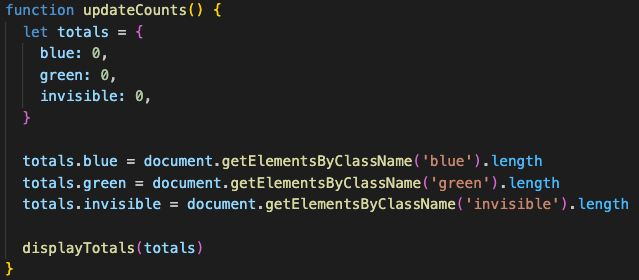

While HTML displays text and images on a website and CSS formats and styles the page’s contents, there is a lot more happening behind the scenes when you visit a web page.
The vast majority of modern websites have some degree of interactivity to them. This is where JavaScript comes in. JavaScript gives web developers the ability to manipulate the HTML and CSS that form the website, based on the actions of the user.
Code written in JS has the ability to monitor keystrokes, mouse clicks and other inputs from the user to change the appearance of the page. An example of this is in the DOM interactions exercise we completed. This image shows how three different mouse interactions caused three different CSS style changes to the page.
JavaScript is different to HTML and CSS in that code doesn’t just have to be executed from top to bottom. A crucial feature is the ability to control the flow of the execution and even the ability to repeat it.
The if condition lets us only execute code when certain conditions are met. This can be paired with the else condition, which executes the code when those same conditions aren’t met. These can be used in sequence to create a chain of if … else if … else statements that execute different code based on many different conditions. A real life process that can be seen as an if … else statement is something as simple as if you are thirsty, drink water, else don’t drink water.
Being able to loop through code is crucial. We are able to run through the same chunk of code as many times as we want. We do this by initialising a variable (usually ‘i’). This is given a starting value (usually 0) and increased by some amount (usually 1) every time the chunk of code is executed until it reaches a limit that is set. In real life, a loop that your brain works through would be in a situation where you are hungry and there is a bowl of fruit in front of you. You would execute the code (eat a piece of fruit), then check whether the condition to loop again (still hungry) is met, and loop again until the condition to loop is not met anymore (full of fruit).
An example of an if … else statement and a loop in action is in our JavaScript Cafe exercise. We can see that the for loop is set to loop until ‘i’ has increased to the same length as the customer order. After that, our loop is finished and the next piece of code in the function executes. Inside of this loop is an if … else statement. This statement sets the condition that if the product has stock above 0, reduce the stock by 1 and add the price of the item to the total sale price, but if the stock is not above 0 (else), the next bit of code executes, sending an alert that we are out of the product.
DOM stands for Document Object Model and without it, we wouldn’t be able to use JavaScript to interact with our HTML and CSS. To understand it, we should run through each word in the name. The document basically just means the webpage we are working with. The object means any one thing or group of things that is a part of the document that we can manipulate. The model means how it is all structured, how everything fits together. The DOM is often represented as a tree showing the structure of the objects within the model.
An example of interacting with the DOM is in our DOM Interactions exercise. We accessed the three elements by their class names ‘blue’, ‘green’ and ‘invisible’. Here we changed the values of our three totals by calling the document.getElementsByClassName() method which does exactly what it says in the name. The document part of this is letting us access the document object. This line of JS looks at the length of each of the classes (how many elements have that class name) and adds that to the total.
Arrays and objects are both structures in which we can store data. They both have their uses, but they differ in the way we access the data inside them.
An array is basically a list of items with their own index inside of a variable. We could have an array of cities like cities = [‘Auckland’, ‘Christchurch’, ‘Wellington’]. We would then access them using their index. Their index is their place in their numerical place in the array. This starts at 0 though and not 1. For example, we would access Auckland in this array using cities[0].
An object is different because the items in the object reference different things. For example, in the JavaScript Cafe exercise we used an object for our different products. Inside of the objects we were able to set the stock and the price.
A function is basically a piece of code that can be called on and executed whenever needed. This code, when executed, performs a task. This could range from one line of code, returning the value of a variable, to thousands of lines of code, performing tasks far more complex.
To define a function, you write the keyword ‘function’, the name of the function, open and closed brackets which may include the names of the parameters the function requires, and curly brackets that hold the code that is to be executed when the function is called.
To call a function, you write the name of the function followed by open and closed brackets which include the actual parameters you want to use if the function requires them.
An example of a function in action is this function that provides a random integer within a given range that we used in the JavaScript Cafe exercise.